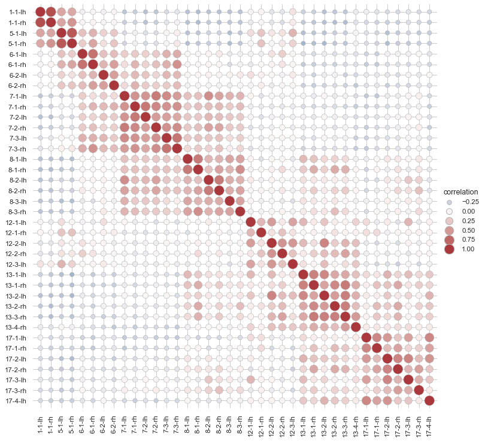

Scatterplot heatmap¶
seaborn components used: set_theme(), load_dataset(), relplot()
import seaborn as sns
sns.set_theme(style="whitegrid")
# Load the brain networks dataset, select subset, and collapse the multi-index
df = sns.load_dataset("brain_networks", header=[0, 1, 2], index_col=0)
used_networks = [1, 5, 6, 7, 8, 12, 13, 17]
used_columns = (df.columns
.get_level_values("network")
.astype(int)
.isin(used_networks))
df = df.loc[:, used_columns]
df.columns = df.columns.map("-".join)
# Compute a correlation matrix and convert to long-form
corr_mat = df.corr().stack().reset_index(name="correlation")
# Draw each cell as a scatter point with varying size and color
g = sns.relplot(
data=corr_mat,
x="level_0", y="level_1", hue="correlation", size="correlation",
palette="vlag", hue_norm=(-1, 1), edgecolor=".7",
height=10, sizes=(50, 250), size_norm=(-.2, .8),
)
# Tweak the figure to finalize
g.set(xlabel="", ylabel="", aspect="equal")
g.despine(left=True, bottom=True)
g.ax.margins(.02)
for label in g.ax.get_xticklabels():
label.set_rotation(90)
for artist in g.legend.legendHandles:
artist.set_edgecolor(".7")